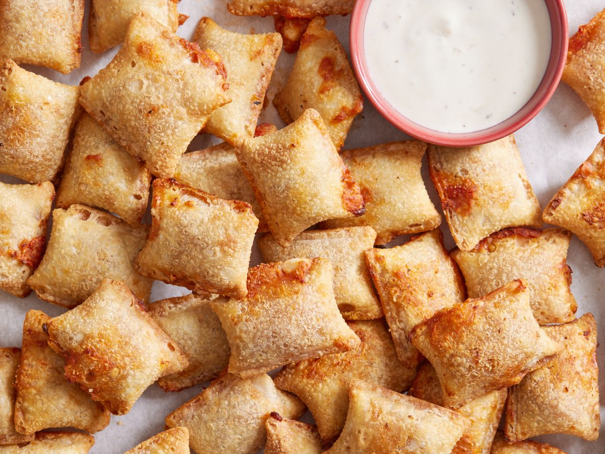

Pizza Rolls Recipe!!!

Description
This recipe will help you cook pizza rolls very easily.
Ingredients
- 2 quarts canola oil for frying
- 1 egg
- 3 tablespoons water
- 1 (16 ounce) jar pizza sauce
- 1 (8 ounce) package sliced pepperoni
- 1 cup shredded mozzarella cheese
- 1 (14 ounce) package egg roll wrappers
Steps
- Heat oil in a deep-fryer or large saucepan to 300 degrees F (150 degrees C). Whisk egg and water together in a small bowl.
- Combine the pizza sauce and pepperoni in a blender or food processor. Process until pepperoni is well chopped and the sauce has thickened. Transfer sauce to a large bowl, and stir in mozzarella.
- Lay out one eggroll wrapper on work surface. Place 1 tablespoon filling at the bottom center of the wrapper, leaving 1/2 inch border on each side. Lightly brush the wrapper edges with the egg mixture. Fold over both sides; roll up to encase filling in wrapper. Repeat with remaining wrappers and filling.
- Deep fry pizza rolls in batches until crisp and golden brown, 5-9 minutes.